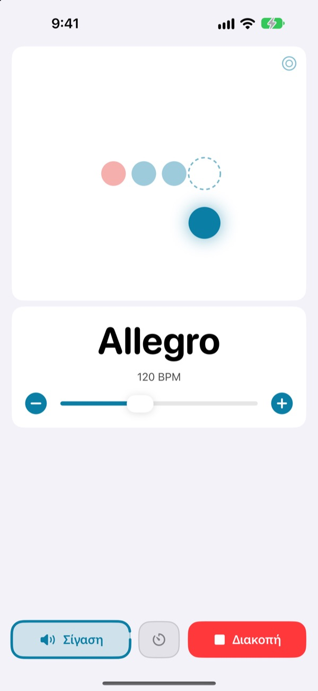
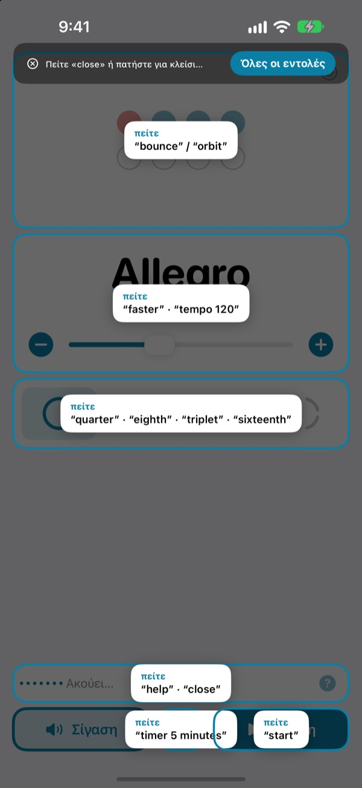
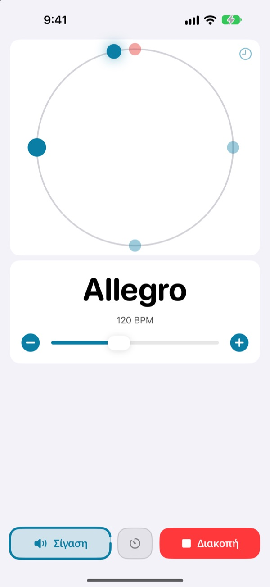
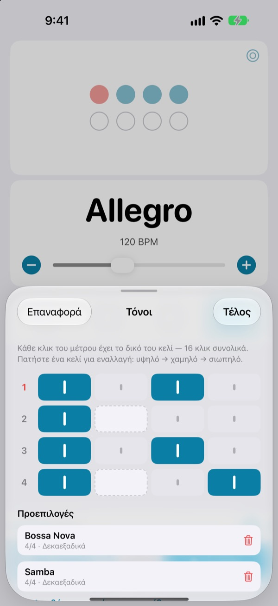

Τα χέρια στο όργανο,
ο ρυθμός με τη φωνή
Πείτε faster στη μέση της φράσης και ο μετρονόμος επιταχύνει. Δεν χρειάζεται να απλώσετε το χέρι στην οθόνη ούτε να σταματήσετε. Οι εντολές λέγονται στα αγγλικά.
Ο πλήρης μετρονόμος και ο φωνητικός έλεγχος είναι δωρεάν.

Δοκιμάστε το φωναχτά
Πατήστε μια φράση ή ανοίξτε το μικρόφωνο και πείτε την στα αγγλικά. Δυναμώστε την ένταση, ο μετρονόμος κάνει κλικ.
Χάσατε τη ροή μόνο και μόνο για να αλλάξετε λίγο την ταχύτητα;
Αφήνετε το δοξάρι, κρατάτε την πένα στα δόντια, πατάτε δύο φορές την οθόνη και η αίσθηση που μόλις βρήκατε χάνεται. Το Not My Tempo αλλάζει την ταχύτητα με μία λέξη, ενώ εσείς μένετε στη θέση που παίζατε.
Το λέτε και ακολουθεί
Σύντομες αγγλικές λέξεις, όπως start, faster και tempo 120. Ακούει μόλις την ανοίξετε, χωρίς να ενεργοποιήσετε τον Έλεγχο φωνής του iOS ή κάποια ρύθμιση προσβασιμότητας.
Ξεχάσατε μια εντολή; Πείτε help και όλες οι φράσεις εμφανίζονται στην οθόνη.

Βλέπετε και τον χρόνο
Διαλέξτε αναπήδηση, τροχιά ή δακτύλιο. Ο πρώτος χρόνος του μέτρου φαίνεται κόκκινος και ακούγεται πιο δυνατά.
Πατήστε στον ρυθμό πάνω στην τροχιά και δείτε πόσο κοντά πέσατε.

Οι τόνοι κάθε κομματιού αποθηκευμένοι
Ορίστε κάθε κλικ του μέτρου ως υψηλό, χαμηλό ή σιωπηλό και κρατήστε το ως προεπιλογή. Φτιάχνετε μία φορά το μοτίβο της μπόσα νόβα ή της σάμπα και την επόμενη φορά απλώς το διαλέγετε. (Pro)

Τρία βήματα για να ξεκινήσετε
- 1
Ανοίξτε την εφαρμογή
Αρχίζει να ακούει αμέσως.
- 2
Επιτρέψτε το μικρόφωνο
Ζητά πρόσβαση στο μικρόφωνο και στην αναγνώριση ομιλίας μόνο μία φορά.
- 3
Μιλήστε ή πατήστε
Κάθε εντολή έχει και κουμπί στην οθόνη.
Τι μπορείτε να πείτε
- start · stop
- έναρξη, διακοπή
- faster · slower
- 5 BPM πιο γρήγορα ή πιο αργά
- up · down
- 1 BPM πιο γρήγορα ή πιο αργά
- tempo 120
- κατευθείαν στην ταχύτητα που θέλετε
- double · half
- διπλάσια, μισή ταχύτητα
- three beats
- αλλαγή μέτρου
- quarter · eighth · triplet · sixteenth
- τέταρτα, όγδοα, τρίολες, δεκαεξαδικά
- louder · quieter · mute
- κλικ πιο δυνατά, πιο σιγά, σίγαση
- volume 60
- ένταση σε ποσοστό
- bounce · orbit
- αλλαγή προβολής χρόνου
- timer 5 minutes
- χρονόμετρο εξάσκησης
- practice
- σταδιακή αύξηση ταχύτητας κατά την εξάσκηση (Pro)
- tune
- άνοιγμα κουρδιστηριού (Pro)
- help
- εμφάνιση όλων των εντολών
- close · done
- κλείσιμο ανοιχτού πίνακα
Η αναγνώριση ομιλίας λειτουργεί στα αγγλικά (ΗΠΑ), γι' αυτό οι εντολές λέγονται με αγγλικές λέξεις. Η εφαρμογή είναι στα ελληνικά και κάθε εντολή λειτουργεί και με πάτημα.
Ο μετρονόμος είναι δωρεάν, το Pro όταν θέλετε περισσότερα
Δωρεάν
- Όλες οι φωνητικές εντολές
- Μέτρα από 1 έως 8 χρόνους, με τονισμένο τον πρώτο
- Υποδιαιρέσεις σε τέταρτα, όγδοα, τρίολες και δεκαεξαδικά
- Αναπήδηση, τροχιά και δακτύλιος
- Tap tempo και έλεγχος ρυθμού
- Χρονόμετρο εξάσκησης
Not My Tempo Pro
- Λειτουργία εξάσκησης: προσθέτει μερικά BPM κάθε λίγα μέτρα μέχρι να φτάσετε τον στόχο σας
- Επεξεργασία τόνων με προεπιλογές ανά κομμάτι
- Χρωματικό κουρδιστήρι
Ετήσια συνδρομή με δωρεάν δοκιμή ή εφάπαξ αγορά για πάντα
Ο φωνητικός έλεγχος και οι λειτουργίες προσβασιμότητας θα μείνουν δωρεάν για όλους. Αν αγοράσατε την εφαρμογή πριν υπάρξει το Pro, έχετε ήδη όλες τις λειτουργίες Pro.
Συχνές ερωτήσεις
Μπορώ να μιλάω ελληνικά;
Η αναγνώριση ομιλίας λειτουργεί στα αγγλικά (ΗΠΑ), οπότε οι εντολές είναι σύντομες αγγλικές λέξεις, όπως start και faster. Τις μαθαίνετε γρήγορα και κάθε εντολή λειτουργεί και με κουμπί.
Δεν με ακούει.
Ελέγξτε ότι η κατάσταση του μικροφώνου γράφει «Ακούει». Αν όχι, πατήστε «Ακρόαση». Σε θορυβώδη χώρο ή όταν παίζετε από ηχεία, βάλτε ακουστικά ώστε το κλικ να μη φτάνει στο μικρόφωνο.
Η ακρόαση έκλεισε μόνη της.
Για εξοικονόμηση μπαταρίας, η ακρόαση κλείνει αν δεν ακουστεί εντολή για λίγα λεπτά. Πατήστε «Ακρόαση» για να ανοίξει ξανά.
Η ταχύτητα βγήκε μισή ή διπλάσια.
Πείτε double ή half και διορθώνεται.
Πώς χρησιμοποιώ το κουρδιστήρι;
Πείτε tune ή πατήστε το κουμπί με την κυματομορφή στην κάρτα ταχύτητας. Παίξτε μια νότα· όταν ο δείκτης μπει στην πράσινη ζώνη, είστε κουρδισμένοι. Για έξοδο πείτε close.
Χρησιμοποιώ ήδη τον Έλεγχο φωνής του iOS.
Απενεργοποιήστε το μικρόφωνο της εφαρμογής και χειριστείτε την με τα ονόματα των κουμπιών. Κάθε χειριστήριο έχει ετικέτα VoiceOver.
Στέλνεται κάπου η φωνή μου;
Όχι. Η ομιλία αναγνωρίζεται στη συσκευή σας και δεν ηχογραφείται, δεν αποθηκεύεται και δεν αποστέλλεται ποτέ. Ο μετρονόμος, ο φωνητικός έλεγχος και το κουρδιστήρι λειτουργούν χωρίς σύνδεση.
Πώς ακυρώνω τη συνδρομή;
Στις Ρυθμίσεις > Λογαριασμός Apple > Συνδρομές. Η ετήσια συνδρομή ανανεώνεται αυτόματα, εκτός αν ακυρωθεί τουλάχιστον 24 ώρες πριν από τη λήξη της τρέχουσας περιόδου. Η αγορά για πάντα είναι εφάπαξ χρέωση.
Ερωτήσεις ή σχόλια; Γράψτε μας στο leeo@kakao.com.